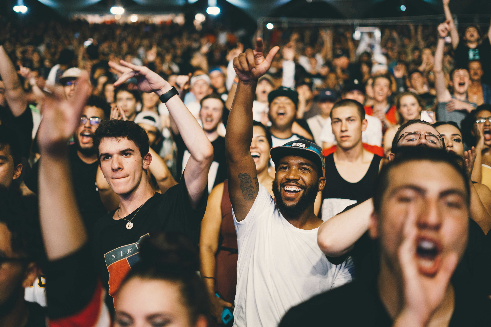

Notícias, arte e cultura

Um grande festival cultural reuniu artistas e visitantes para celebrar a diversidade da cultura brasileira.
O evento contou com apresentações musicais de diferentes estilos e atrações para o público de várias idades.
Além da música, os visitantes puderam acompanhar apresentações de dança e peças de teatro.
Artesãos também participaram do evento mostrando seus trabalhos e produtos produzidos de forma artesanal.
A programação teve como objetivo valorizar os artistas e incentivar o acesso da população à cultura.
Publicado em: 02/10/2026
Autor: Equipe Portal de Cultura
Conheça um pouco mais sobre a diversidade cultural presente no Brasil.
O vídeo apresenta conteúdos relacionados à cultura e às manifestações artísticas brasileiras.